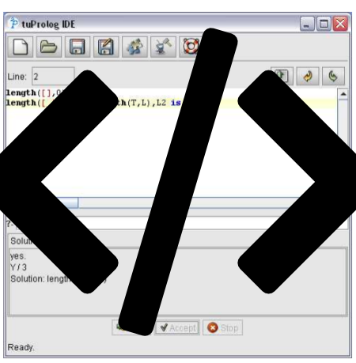
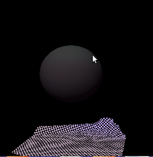
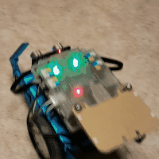
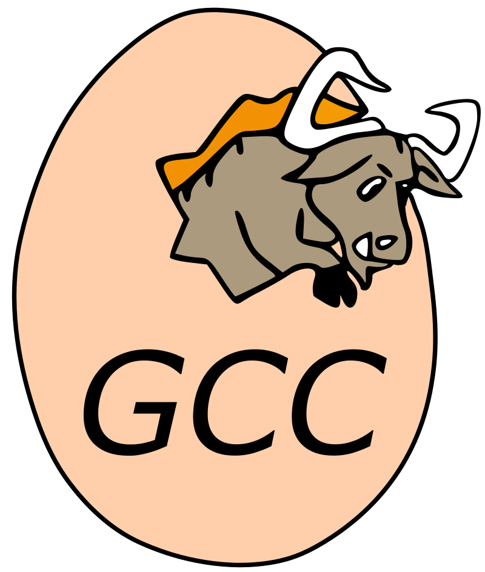
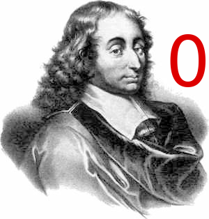
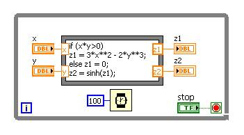
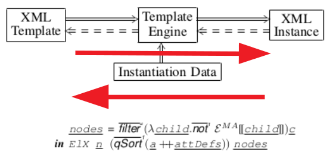
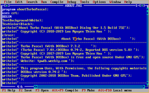

Prolog-XML

Prolog-based XML analysis and processing toolkit, optionally run in a GUI or as a console application. Benefit from the numerous benefits Prolog has over other functional transformation languages like XSLT or XQuery. This software is open-source and ready to be used out of the box as a ready
product.
builder
Don't waste your time as an engineer with flimsy and impossible to maintain Makefile constructs. Use "
builder" instead! This very simple looking C-implementation is ready to be run on any platform and is suited best. For any size project (really!), any compiler environment does not touch your project as is at all. So it had never been easier to change. Check out the
builder right now!
shrinker
As a software/system engineer struggle, imagine you struggle to quickly find bugs in a C++, Java program, or any other programming language. If you experienced this earlier, then "
shrinker" is your best friend. Describe the problem as shrinker wants it and will smash your problem down in almost no time. Sounds like magic? It is. So why not make yourself comfortable with persuasive examples that may apply to the real world? Check out the
source repository.
m-lexer
A C-based lexer for Matlab and Octave scripts. Want to do some parsing or just syntax-highlighting, then do not try to fight with M's extremely ambiguous syntax. Take
m-lexer instead! It's open-source and astonishing simple.
soft-body simulation

Spring-mass simulation for textiles under real physics. A reference implementation of Provot's paper on how to simulate foldings of a tablecloth.
This open-source project uses OpenGL and GLUT and is available for
download.
Rdf3X
Developed a JDBC/ODBC-driver and graphical user interface for the "
rdf3x" knowledge base system. Code reviewed and bug fixed on query optimisation, planning and execution.
The software is open-sourced and available for
download.
Zeiss Starlith
Developed embedded software for the EUV Lithography at Zeiss. Hardware and software research for the future "
Starlith" product line. Patented test report system for optical and electric assembly and alignment.
Robotic corner

makeblock (Arduino-based) playground
Playstation Toolchain


Developed new and bug fixed preexisting optimisations towards size and speed for the GCC-based PlayStation compiler. Maintained and introduced new features to the PS Assembler, e.g. related to section size and number restrictions. Supported some AAA-game studios with technical support on performance analyses and maximum compiler throughput (e.g. Wipeout 2048, Motorstorm, Quake, Uncharted 3).
Pascal0

Developed fully manual and from scratch a compiler frontend for a minimal Pascal subset. Fully implemented lexers, LL(1) + SLR(1)-parser. Designed to be extensible. This open-source project is ready for
download.
MiniPascal
An evolved "
Pascal0"-compiler with introduced code generation based on the Inverse Polish Notation (easily extensible to LLVM's triple and 4-address code notations) as immediate representation. The open-source project is ready for
download.
LabVIEW MathScript

Introduced new language features of the "
MathScript" language into LabVIEW. This included mainly code optimisations, e.g. critical for parallelisation and different architecture execution, and compiler frontend definitions in the context of an awfully ambiguous mathematical (not programming!) language.
Validator-Instantiator

Research results and a Haskell/Java-based implementation can both: validation and instantiation of tree-structured documents.
Research product.
C++-based
3D-racer is implemented using the OGRE-SDK and Ordinary Differential Equation as mathematical apparatus for mechanical simulations.

Numerous programs are written in Pascal, C and C++ as a student,
resources from lecturing programming in C and Pascal and some released university classes, and
my corrective blogs on severe programming mistakes committed by experts in their fields (no offence intended, just wanna be nice).
Final participant of contest in Dresden in 2000 in section "
Algorithms and Programming"